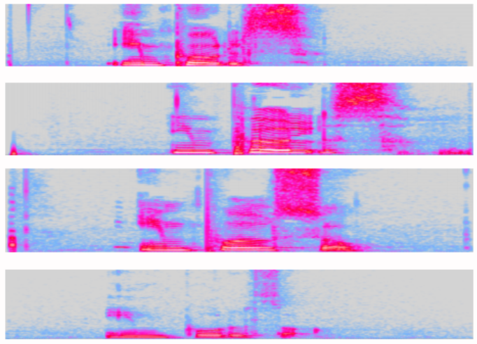
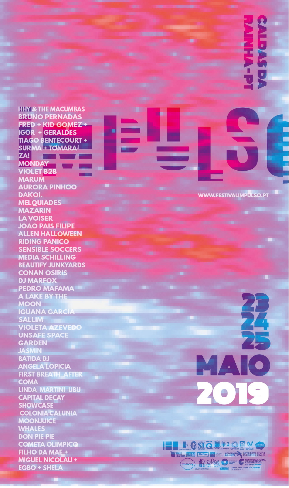
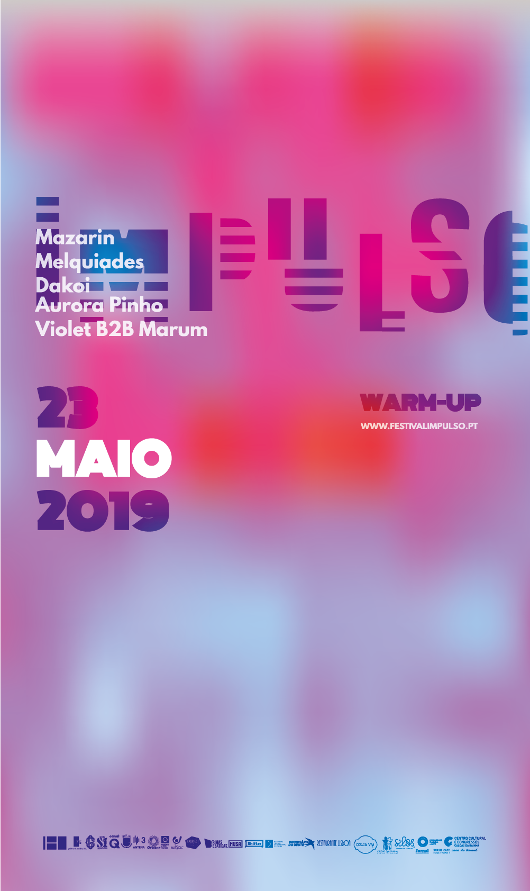
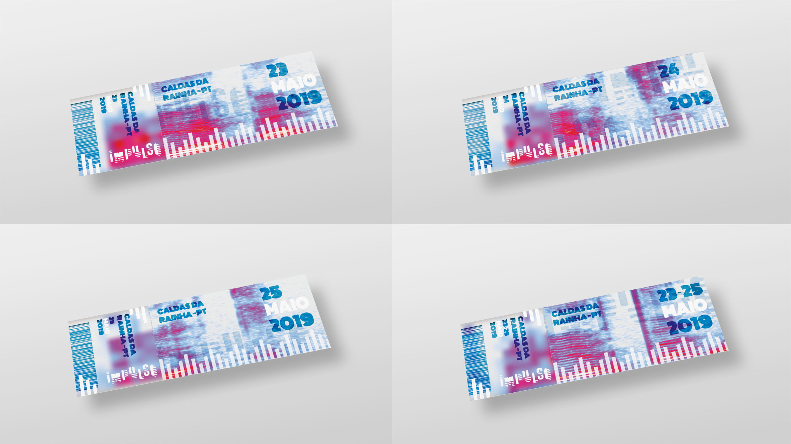

Festival Impulso
During my exchange semester at Upper School of Arts and Design (Politécnico de Leiria) in Portugal I took the course
Graphic Design III. The students in Graphic Design III got the task to design a logotype, poster, tickets and a poster
for the warm up for the Portuguese festival Impulso. Me and three other exchange students partnered up for the project.
Concept
The idea that came to our minds was to find a way to represent the music and our self in a graphic way.
After brainstorming and analyzing the festival and the different kinds of music we came up with the idea
of using the tool of audio program Spectrography. The tool Spectrography analyses the features and the
intensity of the human voice.
To represent the festival in our own way we recorded the word Impulso in our own languages (Swedish, Italian and Portuguese). This resulted in our voices as colors and patterns.

Graphic Design
When we had the visual representation we now started to design the logotype of the festival so that it would match the Spectrography. We designed a logotype with lines that would
represent the graphics of our concept. The layout of the main poster is made to fade in with the pattern of the background. The warm-up poster is blurred because we wanted the feeling that you
can see only a hint of the poster and not the hole background, just like the warm-up concert gives you a hint of the whole festival.
 
We designed tickets for each day of the festival. The background of the tickets is parts of different recordings from the
members of the groups saying the word ticket in our own languages. Therefor the background is different for each day.
The left side of the tickets are blurred, this is the side of the tickets that is useful before the festival, therefore the
background is blurred to give you a feeling of the hint of the festival. On the right side you can see the hole background, this
is the part of the ticket that you use in the festival area.

Conclusion
The impulso festival project was a nice way for me and the other exchange students to get more involved in the Portuguese culture. We presented our work
in front of a jury from the festival Impulso and graphic design students in the school aula. The project made me and my group members to do research about the
festival and the way to communicate sound visually. I learned to collaborate with people from both different study background and cultural background comparing to myself.
My part
My main task in this project was to create the tickets. Together in the group we brainstormed about the context and the graphic design.
During the project I learned a lot of working with Photoshop. The project made me practice to think in a
Graphic Design way when it comes to colors, patterns and typography.
‹ Back